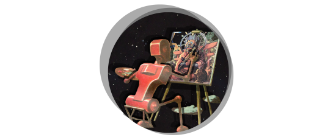

Institutional DiD
Cryptonomic built several components related to decentralized identity in institutional finance settings for a major investment bank. This included schematics, designs, desktop and mobile apps, SDKs and smart contracts.
Links

Temple Token #003, 2022
View on objkt